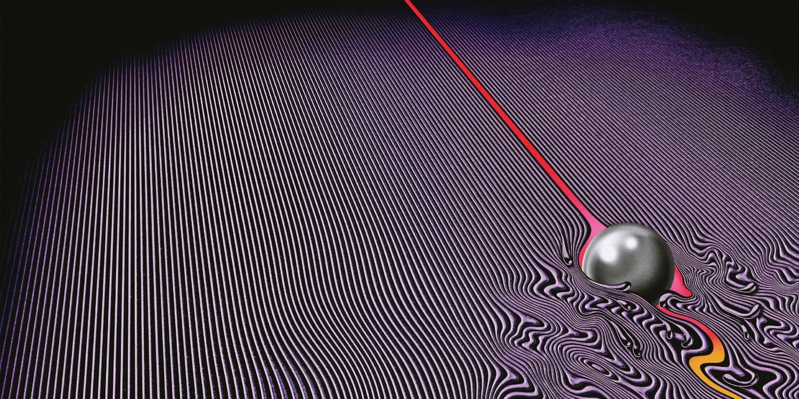
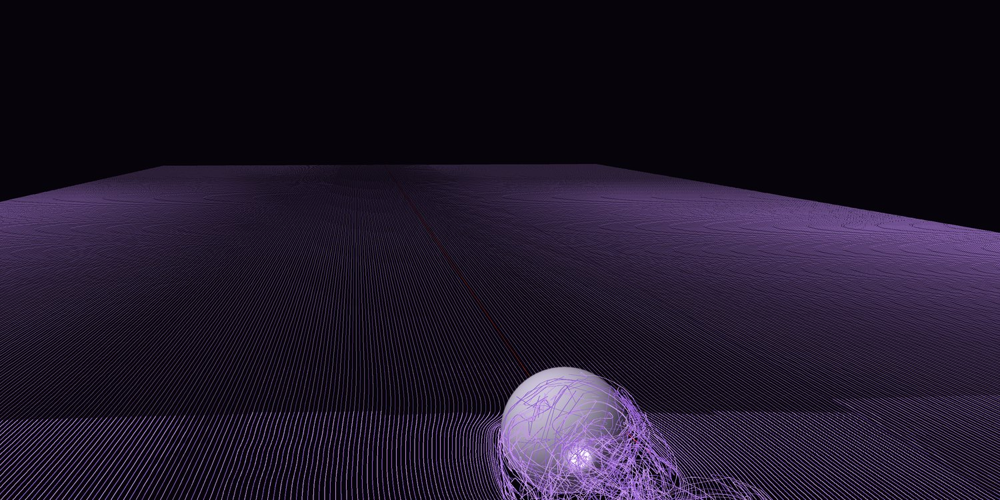
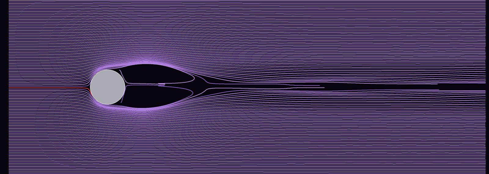
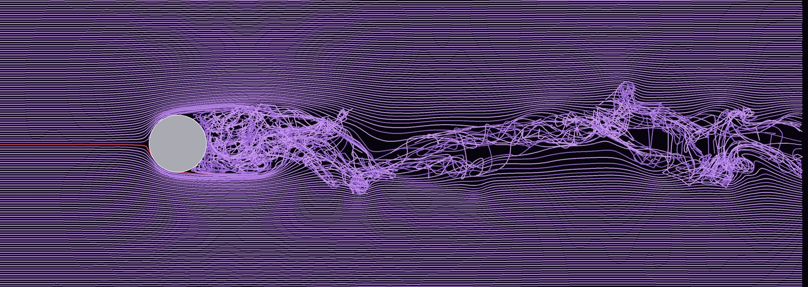
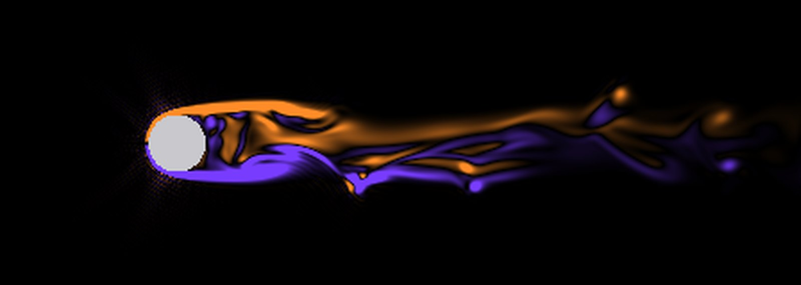
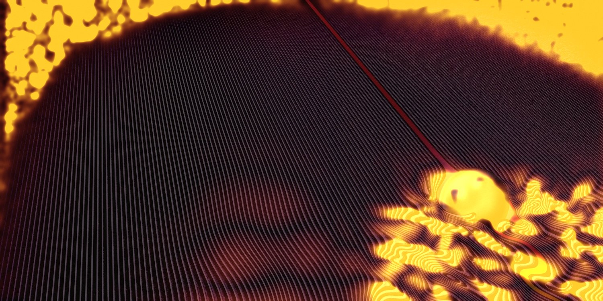

Simulação de fluidos · Tame Impala, Currents (2015)
A capa de Currents obedece Navier-Stokes?
Rodei uma simulação 3D de um fluido passando por uma esfera e soltei linhas de corante no plano que corta o centro dela, como as linhas roxas da capa. A ideia da capa é fisicamente certa. O desenho é que exagera.

A capa. Linhas retas na frente da bola e meandros atrás. A linha vermelha bate na bola e segue pela esteira.

A simulação, Re = 1000, com câmera parecida. Na frente, as linhas ficam retas. Atrás, a esteira vira um emaranhado 3D.
O que a capa acerta
A direção. Se o fluido vem do fundo da imagem (ou a bola se afasta de quem olha), as linhas ficam retas na frente e tudo se perturba atrás. A 1 e a 2 diâmetros antes da bola, o desvio na simulação foi zero.
A linha vermelha se comporta como um filete de corante que bate no ponto de estagnação, contorna a bola e é puxado pra dentro da esteira.
Linhas que não se cruzam e mantêm o espaçamento: é o que um fluido incompressível faz em 2D, como na marmorização de papel.
Onde ela erra
A esteira é larga demais. Logo atrás da bola, a capa já perturba uma faixa de 3 diâmetros ou mais, inclusive ao lado dela.
A turbulência real é 3D. O corante sai do plano e as linhas se cruzam. Na capa, os meandros são suaves e comportados.
Se a bola vem na direção de quem olha, deixando a linha vermelha como rastro, a capa viola a física de vez, porque o rastro atrás dela está perfeitamente reto.
Largura da região perturbada
≥ 3 DCapa, logo atrás da bola (estimado pelo mapa de orientação, em perspectiva)
2,3 DSimulação, pico a 1 D atrás, contando linhas que só desviam em volta da esfera
1,2–1,4 DSimulação, esteira turbulenta de 4 a 8 D atrás
D é o diâmetro da esfera. "Perturbada" quer dizer que o desvio da linha passa de 0,1 D, medido em 20 instantes da simulação.
Animações
Vista de cima, Re = 1000. O corante entra pela esquerda, contorna a esfera e se embaralha nos vórtices que se soltam dela.Mesmo escoamento, câmera da capa.
Dois regimes
A primeira rodada, em Re = 500, deu uma bolha de recirculação estacionária. O modelo de turbulência pôs viscosidade demais perto da esfera. Na segunda, em Re = 1000, com menos viscosidade artificial e uma perturbação pequena na entrada, a esteira ficou instável e passou a soltar vórtices.

Re = 500. Esteira estacionária e simétrica. Nada parecido com a capa.

Re = 1000. Esteira turbulenta. As linhas do lado de fora quase não se mexem.

Vorticidade ωz no plano central, Re = 1000. Laranja gira num sentido, roxo no outro.

Mapa de perturbação da capa. Amarelo marca onde as linhas deixam de ser retas e paralelas (tensor de estrutura). As bordas pretas da imagem também acendem; ignore.
O solver confere com experimentos?
Grandeza
Simulação
Literatura
Arrasto Cd, Re = 100 (teste)
1,21
≈ 1,09
Arrasto Cd, Re = 500
0,572
≈ 0,55–0,57
Arrasto Cd, Re = 1000
0,55
≈ 0,47–0,50
Strouhal St, Re = 1000
0,13
≈ 0,13–0,20
Os desvios de 5 a 10% vêm da esfera "em degraus" numa malha grossa e do bloqueio do domínio finito.
Como foi feito
Lattice Boltzmann D3Q19 em C com OpenMP, colisão BGK e turbulência LES Smagorinsky.
Malha de 448 × 160 × 128 (9,2 milhões de células), esfera com 32 células de diâmetro, ~95 milhões de células atualizadas por segundo num i7 de 4 núcleos.
13.000 passos por rodada, cerca de 21 minutos cada.
128 linhas de corante (streaklines) soltas a montante, no plano que corta o centro da esfera, e advectadas em 3D com Runge-Kutta 2.
Limites da renderização: fora do domínio lateral (~5 D de largura) as linhas são retas de preenchimento, porque ali o desvio fica abaixo de 1%. A montante do ponto de soltura, as linhas foram prolongadas em linha reta.
A bola parece meio afundada numa superfície. Se aquilo for a superfície livre de um líquido, as ondas de gravidade abririam um "V" de perturbação (a esteira de Kelvin, com meio-ângulo de 19,5°), o que explicaria em parte a largura exagerada. Essa versão não foi simulada.